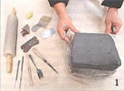
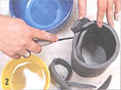
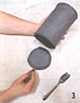
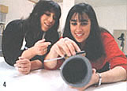
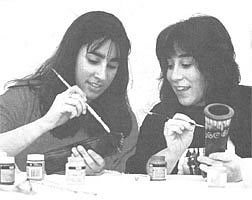

Clay Made Simple
A guide for beginning pottery, including materials, wedging and shaping, decorating and firing.
By Michelle Silver
June/July 1994
Throw away the potter's wheel and rediscover the fun of playing in the dirt. . .
Most aspiring craft enthusiasts shy away from clay. It's too messy, inconvenient, and time-consuming to develop the necessary skills. Besides that, who has the time or money to rent space in a studio, complete with kiln?
After working the 7 A.M. to 1 P.M. shift at my part-time job, I was tired, cranky, and full of similar trepidations when I arrived at a local craft studio. There I met Valerie Birnhak, a 32-year-old artist who had bravely volunteered to show me the joys of clay. While introducing herself, she tossed me a few pieces of moist clay to fool around with. After a few minutes of mindlessly rolling and modeling it, I began to feel decidedly better. Kneading the gray, unformed lump far outweighed the benefits of counting to 10, screaming, or pillow punching.
Valerie, who's been working with clay since she was 13, spent the afternoon teaching me how to make a simple, decorative vase through a process called slab construction. This simple technique eliminates the potter's wheel and studio space, allows newcomers to experiment before making any real money investment, requires few tools and no experience. And we fired the vase in a trash can instead of kiln. Drying things doesn't get simpler than that.
Although, like any learned skill, there were small unpredictables and frustrations (such as hairline cracks in the dried clay and waiting for the firing), the process was overwhelmingly pleasurable. I especially liked that there were few critical rules to follow. Do your best to work out air bubbles in the moist clay, repair cracks when you see them, and add water to keep your clay moist. That's it. And if the clay gets too moist to work with, you can just dry it out a bit.
Valerie smiled as she watched me cheer up and said, "I love working with clay, and although it might sound strange, part of the fun is that there are so many factors out of your control. Like when you fire your project after hours and hours of working on it. All you can do is cross your fingers and pray it comes out okay. That anticipation is exciting."
As for advice, Valerie suggests simply putting away your ego as you work. "Creating with clay is meditative and it's supposed to be fun. You do have to get past the conditioning of believing that crafts have to be a specific shape or have a certain look. I just strive to get out of the way when I'm working with clay and let the creativity happen."
Materials
- potter's rib (see photo)
- wood modeling tool
- sponge scraper
- wire clay cutter (or fishing line with washer on both ends)
- low fire, white ware clay, $7-$9 per 25-lb. bag
- cloth canvas (about 5' x 5'), $4/yard
- sawdust
- 20-gallon trash can, $7
- rolling pin
- fork
- small bucket
- acrylic paints (optional)
Wedging & Shaping
Some people make their own clay, which is very easy but requires access to the right kind of soil. Beginners should probably start with a supply of the store-bought variety. If you have trouble finding some, any hobby shop or pottery store will be able to direct you to a source.
Once you have a small supply on hand, you'll need to "wedge" your clay to get rid of any air bubbles. If you're using scraps of clay, take two huge handfuls of moist clay and clump them together. If you're starting with a block of wet clay, place your fishing line about 3/4" from the top of the block and, holding washers, pull the line horizontally toward you, creating a perfect slab.
To wedge, begin kneading the ball of clay on a clean surface by pushing the heap down and away from you with the heels of your palms. This motion should be a gentle twist. Continue to turn the pile and wedge for approximately five minutes. Do not fold the pile directly over itself, as you would kneading bread, or you will defeat the process by creating air pockets.
Place the wedged clay on the canvas and roll it out with a rolling pin until it is approximately 1/4"-inch thick. Then cut a giant slab(s) into a 10" x 10" square. The texture of your clay should be almost leather hard. If it's too soft, let your slab sit for a half hour or so. It's ready when you can stand the slab on its side and it remains stiff.
Next, use a paring knife to cut a rectangle out of your slab, making sure all of the edges are straight. Do not throw out the scraps; move them out of the way. Then roll your slab into a cylinder form so that the two side edges overlap each other by approximately 1/2" to 1". To join the two sides, stand the cylinder on its base, take your knife and place it at the top of the inner edge (previously the upper left-hand corner of your rectangle). Cut a straight, diagonal line through the slab so that your knife ends up at the bottom of your outside overlap (previously the bottom right-hand corner of the rectangle). Remove the excess scrap and then join the two new edges by lightly pinching them together and smoothing out the seam with your finger. Smooth the inside seam, using the wooden molding tool for better reach.
For the Base
Set the cylinder on top of one of the pieces of slab you've cut away and cut around the circular base, through the scrap, with a knife. Remove the scraps, and pick up your new base. Now you must score the pieces together. Using a fork, scratch lines along the outside circle of your base. Do the same for the bottom of your cylinder, and then dip the bottom into a bucket of water. When you join the cylinder with the base, the scratches will strengthen their attachment. Smooth the outside seam with your finger and the metal rib until you can no longer see it. Then gently roll the whole cylinder along the canvas to get rid of any markings.
For the Lip
Roll a small clump of scrap clay into a coil, using the palms of your hands, until it is long enough to encircle the top of your cylinder. Flatten the top a bit with your fingers and then place the coil along the cylinder top, allowing the ends to overlap. Join them together by cutting through the overlap on a diagonal (as you did for the cylinder). Score the two ends with a fork, mesh them together, and smooth out the seam.
To Decorate
When it comes to decorating the outside of your vase, there's no right or wrong. Try making interesting imprints with a fork, screwdriver handle, or any other utensil. Cut out shapes from the vase with and a cookie cutter, leaving the holes. Or score scraps of cutout clay onto the vase. Remember, if your clay is not almost leather hard, let it sit a while. When you're happy with the design, put some drycleaning plastic around it and let it dry slowly before firing.
Firing
Drill a circle of small holes in the trash can lid and also around the bottom of the trash can, approximately 1 1/2" above the base. Then set the can on a set of bricks.
Pack about six inches of sawdust in the trash can before putting your vase in. Then pack sawdust around the vase and fill the rest of the can with it. Place a lit match in the can and replace the lid loosely, leaving a few inches of breathing space. Allow the piece to fire all day, making sure it stays lit. Once it stops smoking and most of the dust has burned, it's ready. Put on a pair of heavy-duty gloves, pull the vase out, and allow it to cool thoroughly.
Bio Note: Valerie graduated from Skidmore College with a degree in studio arts and a focus on ceramics. She currently paints and is planning to sell her functional pottery.
 (PHOTOS: NICO TOUTENHOOFD) 1. Starting with a block of wet clay, cut a slab using fishing line held between two washers. |
 2. Form slab into an overlapping cylinder and cut a diagonal line through it |
 3. Using a fork, scratch lines along the base circle, as well as the bottom of the cylinder. |
|
 4. Smooth the outside seam of the newly applied base with your metal rib and finger. (PHOTOS: NICO TOUTENHOOFD) |
 After firing for the better part of a day, the vase is ready to be cooled. . .then decorated. |
 |